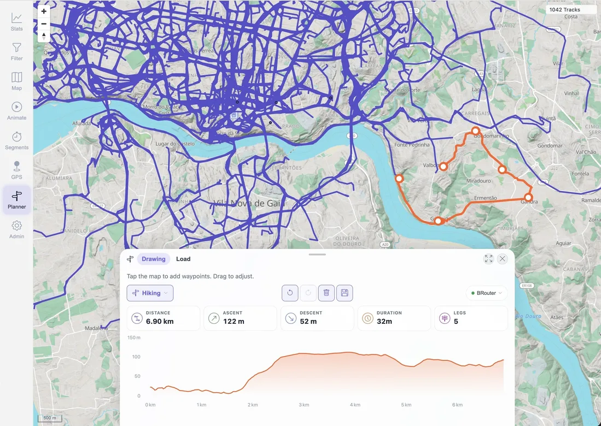
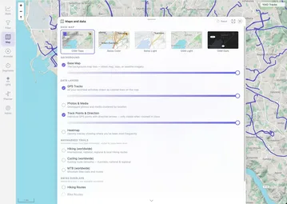
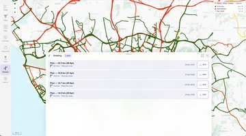

Travel modes
Choose hiking, mountain bike, road bike, touring bike, or car.
Route planner
Click points on the map, and MTL Explorer finds the route between them. Save places you want to visit, with or without a route. You see distance, climb, and an elevation profile, and can export the route as GPX.

Choose a profile, edit waypoints, review the result, and save a plan.
Keep named places with a route or as a plan of their own.
Moving a point only recalculates the route next to it.
Choose hiking, mountain bike, road bike, touring bike, or car.
Distance, climb, and the elevation profile update as you edit.
Save a plan and open it later to keep editing.
Export the route as a GPX file for another app or your GPS device.
Map context
Plan on the same map as your tracks. Your past activities stay visible, and you can show marked hiking and cycling routes.


Local plans
Plans are saved on your MTL Explorer server, together with your places. They are kept separate from your recorded activities.
Route planning uses BRouter, which is included in the standard installation.
Your draft is kept. Check the message before adding more points.
Routing data for this area may still be downloading. Wait until it is done, then try again.
Check the travel mode and move the point onto a road or trail. A path on the map may still be closed for your travel mode.
Check the routing log with docker compose logs --tail=100 brouter. Routing data is stored in ./data/brouter-segments/.
Inspect the exported path in the destination app or device. Conditions, access rules, and map data can differ from the plan.